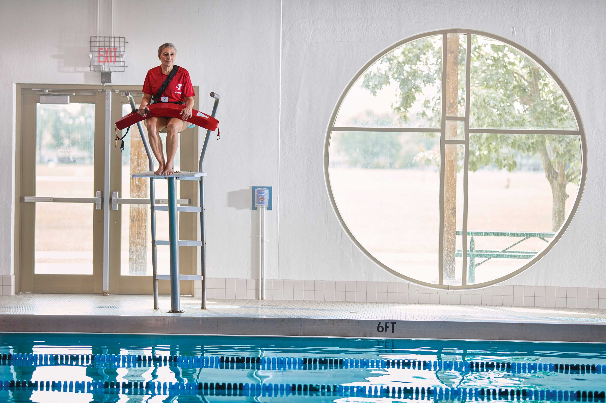

Take a virtual tour through our branches and amenities.
State-of-the-art pools and water features for swim lessons and recreation.

Modern equipment and group fitness studios.
Safe spaces for kids to learn, play, and grow.